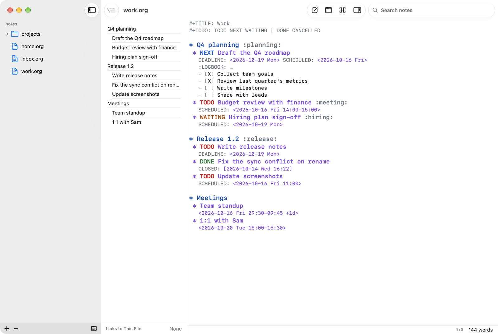

Files, folders and buffers
orgstar works on folders of files you add to its sidebar, keeps each open file in a buffer, saves on its own, and merges changes other programs make to the same files.
The window
orgstar has one main window, titled with the name of the buffer it shows. From left to right it holds:
- the sidebar, listing the folders you added and the files in them;
- the outline pane, listing the headings of the open file, with the backlinks pane under it;
- the editor, with the optional tab bar above it and the modeline and echo area below it;
- the inspector, hidden by default, showing column view and clocked time.

The toolbar holds a button that shows or hides the outline pane; Capture, Agenda and Commands (the command palette) buttons; a button that shows or hides the inspector; a progress indicator while orgstar indexes your folders, the running clock (see Dates and clocking), a Conflict button when the open file has a conflict (see Conflicts below), and the search field. View ▸ Customize Toolbar… adds, removes and moves the buttons.
Help ▸ orgstar Manual opens this manual on the web, and Help ▸ Keys its key reference.
The window title is the buffer name (see Buffer names below). When the open file is not UTF-8, the subtitle reads Read-only: not UTF-8. The close button shows the unsaved-changes dot while any open buffer has unsaved edits.
With no folders added, the editor area reads "Add a folder of org files". With folders but no open file, it reads "Choose a file" and suggests ⌘P.
The Agenda, Board, Clock Report and Capture windows are separate; they are covered in Agenda, Dates and clocking and Capture. Closing the main window quits orgstar when no other window is open.
Menus and the command palette
Most commands are in the menu bar. The Org menu lists every org command, each with the keys that run it in the current keymap; it is disabled when no file is open.
File ▸ Command Palette… (⇧⌘P; M-x in the Emacs and Doom presets; SPC : in Doom normal state) lists every command by title with its keys. Type to filter (characters match in order, as in Quick Open), then press Return to run the top match or click one. Escape closes it. Text movement and editing commands (forward character, kill line and so on) are not listed; they are only on keys.
Several commands in this chapter are only in the palette, not in a menu: Close Other Buffers, Close All Buffers, Last Buffer and Show or Hide Tab Bar.
Showing and hiding panes
| Menu item | Shortcut | Palette title |
|---|---|---|
| View ▸ Show Outline | ⌥⌘O | Show or Hide Outline |
| View ▸ Show Backlinks | Show or Hide Backlinks | |
| View ▸ Show Inspector | ⌥⌘I | Show or Hide Inspector |
| View ▸ Show Tab Bar | Show or Hide Tab Bar |
The toolbar's outline button does the same as View ▸ Show Outline. The sidebar is shown and hidden with the standard View menu command. The button at the right of the bar under it switches it between the files and an agenda; see The agenda.
orgstar remembers whether the outline, backlinks and inspector are shown. The outline pane's visibility is remembered for org files only: for other files it starts hidden each time you open one. Drag the divider on the outline pane's right edge to resize it (160 to 400 points; 220 by default). VoiceOver reads the divider as Outline width, which it adjusts in steps of 20 points.
Folders
orgstar does not open a single folder like a project. You add any number of folders, called roots, and each appears as a section of the sidebar. orgstar indexes every org file in them for search, the agenda, refiling, backlinks and IDs.
Adding a folder
Choose File ▸ Add Folder… (⇧⌘O), or click + at the bottom of the sidebar, and pick a folder. You can also drag folders from the Finder onto the sidebar. The first time orgstar opens with no folder, a welcome sheet offers the same, or a new org folder in iCloud Drive with a notes.org in it (in the Mac App Store version, a folder you choose or make in iCloud Drive), and the choice of keys; Get Started… in the empty window opens the sheet again. orgstar indexes it in the background; the toolbar shows a progress indicator while it works.
orgstar keeps a bookmark to each folder, so a folder you move or rename in Finder is followed. If a folder can't be found at launch, orgstar reports Can't find the folder PATH. Adding a folder that is already in the sidebar does nothing.
orgstar keeps the list of folders, the index and recovery versions in ~/Library/Application Support/Orgstar; the Mac App Store version keeps them in ~/Library/Containers/sh.krz.orgstar/Data/Library/Application Support/Orgstar.
Removing a folder
Click − at the bottom of the sidebar and choose the folder, or right-click the folder's header and choose Remove from Sidebar…. Confirm with Remove. The folder and its files stay on disk; only orgstar's index entries for them are removed.
What the sidebar lists
Each root is a collapsible section headed by the folder's name; hover over the name to see its full path. Roots are sorted by path. Inside a root, subfolders come first, then files, each sorted by name the way Finder sorts them. orgstar remembers which roots you collapsed.
The sidebar lists every file in the folder, not only org files, with an icon for its kind:
| Icon | File |
|---|---|
| document | .org |
| archive box | .org_archive |
| orange warning sign | a Syncthing conflict copy (see Syncthing conflict copies below) |
| photo | an image |
| rich document | a PDF |
| play button | audio or video |
</> | source code or a script |
| plain document | other text |
| cloud with arrow | an iCloud file still downloading (see iCloud below) |
Some files are never listed or indexed:
- Emacs backups (names ending in
~), auto-save files (names starting with#) and lock files (.#name); - Syncthing's temporary files (
.syncthing.*); - orgstar's own temporary files (names containing
.orgstar-); .DS_Storeand.localized;- anything inside these folders:
.git,.hg,.svn,.jj,.bzr,.stfolder,.stversions,.Trash,.Spotlight-V100,.fseventsd,.build,.venv,.cache,.tox,.mypy_cache,.pytest_cache,.gradle,.next,.terraformandnode_modules.
Other dotfiles and dot folders are listed unless you turn off Settings ▸ General ▸ Show hidden files and folders (on by default). To change the list of ignored folders, set ignored-folders in config.toml to folder names separated by spaces; there is no control for it in Settings. See Configuration.
[orgstar]
show-hidden-files = true
ignored-folders = ".git .hg node_modules build"Org files (.org and .org_archive), Markdown files (.md, .markdown) and .txt files are read by the index. Only org files feed the agenda, IDs and links; Markdown and text files are searched, and their denote: links are read for backlinks (see Links). Other files are listed and can be opened, but their contents are not searched.
Creating, renaming and trashing files
Right-click a file or folder in the sidebar for:
- New File… — creates a file in that folder (for a file, in the folder holding it). A name without an extension gets
.org. A name likeprojects/housecreates theprojectsfolder too. Names can't start with/or contain... The new file opens. - Rename… — renames the file or folder in place. The new name can't contain
/. Open buffers of the file, or of files inside the folder, are saved first (in explicit save mode you are asked) and reopened under the new path. - Show in Finder.
- Move to Trash… — moves the file or folder to the Trash after you confirm. Open buffers of it close without saving; the confirmation warns you when the file, or an open file inside the folder, has unsaved changes. You can put it back from the Trash in Finder.
Right-click a root's header for New File…, Expand or Collapse, Show in Finder and Remove from Sidebar….
File ▸ New File from Template… makes a new file from a template in snippets.toml, in a folder and with a name you choose; see The editor.
Opening files
Click a file in the sidebar to open it. Other ways:
- Quick Open: File ▸ Quick Open… (
⌘P;C-x C-fin the Emacs and Doom presets;SPC SPC,SPC .orSPC f fin Doom normal state). Type part of a file's path below its root. Characters match in order, not necessarily next to each other; matches at the start of a word and runs of consecutive characters rank higher, and shorter paths win ties. Up to 50 matches show, with each file's name and path. The top match is selected;↑and↓, orC-pandC-n, move the selection. PressReturnto open the selected match or click any match;Escapecloses the list. Syncthing conflict copies are left out. - Finder: open an org file from Finder, with
open file.orgin Terminal, or by dropping it on orgstar's Dock icon. orgstar registers as the default app for org files and as an alternative editor for plain text. Each file opens as a buffer. - Links: following a
file:link or an ID link opens the target file; see Links. - Doom ex command:
:e FILEopensFILE, relative to the current file's folder;~is expanded. A file that doesn't exist is reported asNo file FILE.
A file opened from Finder or by a link does not have to be inside one of your folders. In the Mac App Store version, a link to a file outside them first asks you to grant access to its folder (see Install). Such a file is edited and saved normally, but it isn't listed in the sidebar, isn't indexed for search or the agenda, and isn't watched for outside changes (orgstar still merges outside changes when it saves; see Saving below).
orgstar has no Open Recent menu. Instead, it reopens the buffers that were open when you quit, in the same order, with the same file showing and each caret where you left it. Files that no longer exist are skipped.
Files that aren't org
How a file opens depends on what it is:
- Org files (
.org,.org_archive) open in the editor with org editing. - Markdown files (
.md,.markdown) open in the editor with Markdown highlighting, heading folds and an outline; see Markdown below. - Text files open in the same editor as plain text. A file counts as text when macOS knows its type as text, or, for unknown types, when its first 8 KB are valid UTF-8 with no NUL bytes. Org commands, folding included, report
Not an org file, and the outline pane shows "No outline" when you turn it on. Files in these languages get syntax highlighting: shell (.sh,.bash,.zsh,.zshrc,.bashrc,.profile), Python, Emacs Lisp, C, C++, R, JavaScript, Java, Scheme, Clojure, Haskell, Rust, Go, Ruby, JSON, YAML, TOML and Lua. - Everything else (images, PDFs, audio, video, archives, binary files) shows a Quick Look preview in place of the editor, with
Open with Default AppandShow in Finderbuttons below it. The preview is not a buffer.
Text files from Finder use orgstar only if you choose it with Open With, since orgstar is not their default app.
Markdown
Markdown and plain text are a fallback, for notes kept in those formats next to org files, such as Denote's Markdown notes. orgstar edits them as text and doesn't convert them.
In a Markdown file the editor styles:
- ATX headings (
#to######), in the theme's heading colours and sizes; **bold**,__bold__,*italic*,_italic_,~~strike-through~~and`code`, with their markers in the markup colour;- links (
[text](url),[text][label],<url>, barehttp://andhttps://addresses, images and[label]: urldefinitions); - list bullets and numbers, task boxes (
[ ],[x]), block quotes, tables, rules (---,***,___) and<!-- comments -->; - fenced code (
```or~~~) on the block band, highlighted when the fence names one of the languages above; - YAML (
---) or TOML (+++) front matter at the top of the file, highlighted as YAML or TOML.
Headings fold with the fold commands of Folding in The editor: TAB on a heading line, S-TAB, Doom's z keys, and a click on a heading's #=s. A section runs to the next heading of the same or a higher level; a =# line inside fenced code or front matter is not a heading. The outline pane lists the headings, and search finds them (see Searching your notes below).
Other org commands report Not an org file and change nothing, so none of them writes org syntax into the file. Among them: heading and list structure commands, TODO keywords, priorities, tags, properties, dates, tables, links and Insert Link, emphasis, checkbox toggling, clocking, refiling, archiving, attachments, encryption, Share Subtree, Copy as Rich Text and every export. Lint File says it works on Org files. Typing doesn't continue lists, pair brackets or fill paragraphs as it does in org files, dropped files aren't attached, and snippets don't expand. Commands that don't act on the file's own entries, such as the agenda, capture, search and Save, work as usual.
Not supported in Markdown files: setext headings (a line underlined with = or —), indented code blocks, HTML blocks, emphasis that spans lines, footnotes, a rendered preview, and Markdown versions of org's structure editing, agenda, capture and export.
Buffers
Each open file is a buffer, as in Emacs. A buffer keeps its text, caret, folds, undo history and unsaved edits while another buffer is showing. Opening a file that already has a buffer shows that buffer. Two paths to the same file (through a symbolic link, for example) share one buffer, as find-buffer-visiting does.
A new buffer is placed after the current one in the buffer order. Next and Previous Buffer follow that order and wrap around. Switch to Buffer and Last Buffer follow the order in which you last showed buffers.
Buffer commands
| Command | Menu, or palette | Mac | Emacs preset | Doom (normal state) |
|---|---|---|---|---|
| Switch to Buffer… | Window ▸ Switch to Buffer… | C-x b, C-x C-b | SPC b b, SPC b B, SPC ,, :b, :ls | |
| Next Buffer | Window ▸ Next Buffer | ⇧⌘], ⌃Tab | ⇧⌘], C-x <right> | SPC b n, SPC b ], ] b, :bn |
| Previous Buffer | Window ▸ Previous Buffer | ⇧⌘[, ⌃⇧Tab | ⇧⌘[, C-x <left> | SPC b p, SPC b [, [ b, :bp |
| Last Buffer | palette | SPC ` | ||
| Close Buffer | File ▸ Close Buffer | ⌘W | ⌘W, C-x k | SPC b k, SPC b d, :bd |
| Close Other Buffers | palette | SPC b O | ||
| Close All Buffers | palette | SPC b K |
Menu shortcuts (⇧⌘], ⌘W and the others) work in every preset. The Doom preset also has the Emacs preset's C-x keys in every state. The Mac preset's ⌃Tab and ⌃⇧Tab are in addition to the menu shortcuts.
Switch to Buffer asks in the echo area. The choices are the open buffers, most recently shown first, with the current buffer last. Type to narrow them, Tab to complete the top choice, Return to switch, Escape to cancel.
Close Buffer closes the current buffer and shows the buffer you showed before it. With no buffer open, ⌘W closes the window. In a window split into panes, closing the last tab of a pane closes the pane; its buffer stays open when another pane shows it. In other windows (Agenda, Board and so on) ⌘W closes that window. File ▸ Close Window (⇧⌘W) closes the window in front.
When you close buffers with unsaved edits, what happens depends on the save mode (see Saving below): in automatic mode they are saved first; in explicit mode orgstar asks Save, Don't Save or Cancel (Save All for several files). A buffer whose save fails or conflicts stays open.
Buffer names
A buffer is named after its file. When two open files have the same name, each name gets as many of its folders as it takes to tell them apart, in angle brackets, as Emacs's uniquify does with post-forward-angle-brackets:
notes.org<work>
notes.org<home>
notes.org<archive/2024>These names show in the window title, the tab bar and Switch to Buffer.
The tab bar
View ▸ Show Tab Bar shows a row of tabs above each pane, one per buffer that pane has shown, in the order it first showed them. It is off by default; the setting is tab-bar in config.toml.
- Click a tab to show its buffer. Hover to see the file's full path.
- Click
×to close a buffer, in every pane. On a pane's last tab, with other panes in the window, it closes the pane as well, as Close Buffer does. A dot replaces the×while the buffer has unsaved edits; clicking it also closes the buffer, with the same unsaved-changes handling as Close Buffer.
Searching your notes
The search field in the toolbar searches every org, Markdown and .txt file in your folders. Click it or choose Edit ▸ Search Notes (⇧⌘F; SPC / or SPC s p in Doom normal state) and type.
While the field holds text, the outline pane shows the results in place of the outline. Each result is a heading, or a file when the match is in the text before its first heading, titled by its #+TITLE or its name. Under the title is the passage the words were found in, with them in bold, then the file's name. Click a result to open the file at that heading. Clear the field to get the outline back.
How matching works:
- orgstar searches heading titles, the text under each heading and the text before a file's first heading, in
.organd.org_archivefiles, and in Markdown files by their#headings. A Markdown file's result for the text before its first heading is titled by thetitlein its front matter, else its first heading. A.txtfile is searched as a whole and titled by its name, or a Denote note's by thetitle:in its front matter. Other files are not searched. Syncthing conflict copies are not searched. - Each word you type matches words that start with it, ignoring case and accents:
projfindsprojectandprojection. - Every word must match within the same heading, or within the text before the first heading.
- Up to 50 results show, best matches first.
- Open buffers with unsaved edits are searched as they are in the buffer, not as they are on disk.
To find text inside the open file, use Edit ▸ Find (see The editor).
The outline pane
The outline pane lists the headings of the open org or Markdown file, indented by level. Headings without a title show as (untitled). Click a heading to move the caret to it; folded headings around it unfold. A file without headings shows "No headings"; a file that is neither org nor Markdown shows "No outline".
The outline follows your edits after a short pause in typing.
Backlinks
Under the outline, the backlinks pane lists headings in your folders that link to the current file (a link before a file's first heading is listed under the file's name) (Links to This File) and to the heading at the caret (Links to followed by the heading's title). It updates as you move the caret. Click an entry to open it. Turn the pane off with View ▸ Show Backlinks. Which links count is covered in Links.
Inspector
View ▸ Show Inspector (⌥⌘I) opens the inspector, a pane on the right with column view and clocked time for the file or the current subtree. See Outlines and Dates and clocking.
Saving
Settings ▸ General ▸ Save files has two modes; the config.toml setting is save in [orgstar].
- Automatically, when typing stops (
automatic, the default). Each buffer saves one second after its last change, including buffers that are not showing. Quitting and closing buffers save without asking. - Only with File ▸ Save (⌘S) (
explicit). Nothing is written until you save. Closing a buffer or quitting with unsaved edits asks first.
| Command | Menu | Shortcut | Emacs preset | Doom |
|---|---|---|---|---|
| Save | File ▸ Save | ⌘S | C-x C-s | SPC f s, SPC b s, :w; :wq and :x save and close the window |
| Save All | File ▸ Save All | ⌥⌘S | C-x s | SPC b S |
Save is disabled for a read-only file. Save All is disabled when nothing is unsaved.
The modeline shows a dot while the current buffer has unsaved edits. Buffers with unsaved edits show a dot in the tab bar.
How a save works
orgstar does not assume it is the only program writing your files. Emacs, Syncthing, iCloud and Git may change them too. Each save:
- Reads the file on disk. If it has changed since orgstar last read or wrote it, orgstar merges those changes into the buffer first (see External changes below). If they conflict with yours, nothing is written and the buffer has a conflict.
- Checks the file again, then writes the buffer to a temporary file in the same folder and replaces the original with it, so the file is never half-written.
- Reads the file back. If another program wrote it at the same moment, the version that lost goes to recovery and the other program's changes are merged where possible.
Every version a save displaces goes to recovery first (see Recovery versions below). Reads and writes go through macOS file coordination, so iCloud and other coordinating programs see a consistent file.
A save keeps the file's encoding details: a UTF-8 byte order mark stays, and text you didn't change keeps its exact bytes, including CRLF line endings. Lines you add end in LF.
External changes
orgstar watches the files in your folders. When a file with an open buffer changes on disk:
- If the buffer has no unsaved edits, it reloads. The caret and folds stay where they were, mapped through the change.
- If the buffer has unsaved edits, orgstar merges the change into the buffer line by line, against the version both started from. Lines changed on one side take that side; lines changed the same way on both sides are taken once. The merged buffer still has unsaved edits and saves as usual.
- If both sides changed the same lines differently, the buffer has a conflict.
Reloading or merging clears the buffer's undo history.
If an open file is deleted on disk, its buffer stays open with its text. Saving it writes the file again.
To throw away your unsaved edits and load the file as it is on disk, choose File ▸ Revert to File on Disk (also in the palette; :e in Doom). Your edits go to recovery.
Conflicts
When a buffer conflicts with its file, automatic saving stops for that buffer, the Conflict button appears in the toolbar, and the conflict sheet opens. The sheet shows the differences: lines marked - are on disk, lines marked + are in your version, with three lines of context around each change. Removed lines are tinted in the theme's todo color and added lines in its done color. With Differentiate Without Color on in the system's accessibility settings, each changed line is also labelled Removed or Added; with Increase Contrast on, the tint is stronger and a bar marks each changed line. VoiceOver reads each changed line with Removed or Added before it. Choose:
| Button | What it does |
|---|---|
| Keep Mine | Writes your version over the file. The disk version goes to recovery. This is the default button. |
| Use Disk Version | Loads the file as it is on disk. Your version goes to recovery. |
| Merge with Markers | Puts both sets of changes in the buffer, as git merge leaves a conflict: non-conflicting changes merged, conflicting lines between markers. Your version as it was goes to recovery. |
| Cancel | Closes the sheet. The conflict stays; click Conflict in the toolbar to reopen it. |
After Merge with Markers the buffer holds blocks like this, which you edit and save:
<<<<<<< yours
- [ ] Call the plumber on Monday
=======
- [X] Call the plumber
>>>>>>> diskWhile a conflict is unresolved, saving that buffer does nothing except reopen the sheet.
Syncthing conflict copies
When two devices change a file before Syncthing syncs them, Syncthing keeps one version as a conflict copy beside the file, named like notes.sync-conflict-20260301-142233-ABCDEF7.org. orgstar lists these in the sidebar in orange with a warning icon, and leaves them out of search, the agenda, ID lookup and Quick Open.
When you open a file that has conflict copies, the echo area says how many there are. Choose File ▸ Resolve Sync Conflicts… to compare them. Pick a copy from the menu at the top; lines marked - are in the file (as the buffer holds it) and lines marked + are in the copy. Then choose:
| Button | What it does |
|---|---|
| Keep File | Leaves the buffer as it is. |
| Use Copy | Replaces the buffer's text with the copy's. |
| Merge with Markers | Puts every difference between the buffer and the copy between conflict markers, labelled with the two file names. There is no common base to merge against, so every difference is marked. |
Each choice moves the copy to recovery and deletes it from the folder. The buffer changes as an edit you can undo, and is saved according to your save mode. When no copies are left the sheet closes.
Recovery versions
Whenever orgstar replaces a version of a file, it keeps a copy: your buffer when you take the disk version, the disk version when you keep yours, a version another program wrote while orgstar saved, and resolved Syncthing copies. It also keeps a snapshot of the file as it was before a save, at most once an hour, so there is a version of your own writing to go back to. orgstar keeps the last 20 replaced versions and the last 10 snapshots per file in ~/Library/Application Support/Orgstar/Recovery (in the Mac App Store version, the same folder inside its container).
Choose File ▸ History… to see the open file's versions, newest first, each with its date and why it was kept:
| Label | Meaning |
|---|---|
| Your version, replaced | Your buffer, before it was replaced |
| Disk version, replaced | The file on disk, before orgstar wrote over it |
| Sync conflict copy | A Syncthing conflict copy you resolved |
| Snapshot, before a save | The file as it was before a save |
In the download version, when the file is in a git repository, the list also has the commits that changed it, found with git log --follow so they reach past a rename, among the kept versions by date. A commit shows its subject, its short hash and its author.
Select a version to see how it differs from the buffer (- in the buffer, + in the selected version). Restore puts that version's text in the buffer as one edit, which undo reverses; the buffer as it was goes to recovery first. Restoring a commit changes only the buffer: nothing is checked out, and the file is written by the next save as usual. Show in Finder reveals a kept file. For a file with no versions the sheet says so.
Committing to git
The download version can commit your changes in a folder that is a git repository. It is off for every folder. In Settings ▸ Git, choose for each folder in the sidebar:
| Choice | What happens |
|---|---|
| Off | Nothing. The default. |
| Commit | A minute after the last save in the folder, and when orgstar quits, orgstar commits the files it saved. |
| Commit, Pull and Push | Before committing, git pull --ff-only; after the commit, git push. |
Only the files orgstar wrote since the last commit are committed: files saved from a buffer, and files changed by refiling, archiving, capture and agenda commands. Other changes in the repository, staged or not, stay as they are, so your own work in progress is never committed. orgstar remembers these files until they are committed; files written before a crash are not committed. An encrypted .org.gpg file is committed as it is on disk, like any other file. A file that is ignored by .gitignore, or that is the same as in the last commit, is left out.
The commit uses your git identity and configuration, including signing and hooks. Its message is Update followed by the file names, or Update N files with the paths in the body when there are more than three. The echo area says what was committed and pushed.
orgstar runs the git it finds in /opt/homebrew/bin, /usr/local/bin, /run/current-system/sw/bin or on the PATH (/usr/bin/git only with the developer tools installed), or the one ORGSTAR_GIT names. It never asks for anything: a remote that needs a password or a host key confirmation fails, and the echo area says git couldn't sign in. Use an SSH key in the agent or a credential helper such as the keychain. Each git command is stopped after 30 seconds, or 60 for pull and push (15 when quitting).
orgstar never merges, rebases or resolves a conflict:
- When the pull can't fast-forward, because the remote and your repository both have commits or the remote changed a file you have changed, orgstar still commits locally, doesn't push, and says so. Pull and resolve it in a terminal (for example
git pull --rebase). - While a merge, rebase, cherry-pick, revert or bisect is in progress, or another git command holds the index, orgstar doesn't run git in that repository. The files wait and are committed after the next save once it is finished.
- A push runs only after the pull succeeded and something was committed.
The Mac App Store version can't run git and has no Git pane.
iCloud
Files in iCloud Drive that aren't downloaded to the Mac show in the sidebar with a cloud icon and grey text, with the tooltip "Downloading from iCloud". orgstar asks iCloud to download them, and indexes them and lets you open them when they arrive. Files iCloud removes from the Mac to save space keep their index entries until they are back, so search and the agenda still find them.
Handoff
A file open in the editor can be continued on another Mac, iPhone or iPad signed in to the same Apple Account, with Handoff turned on in each device's settings. The other device shows orgstar's icon in the Dock or the app switcher; choosing it opens the same file in its editor, at the same place.
What is passed is where the file is and where the caret is, never the file's text:
- the name of the added folder the file is in, the file's path inside iCloud when it is in iCloud Drive, and its path inside the folder;
- the caret's heading (its
IDwhen it has one, and the titles of it and the headings above it) and line.
The other device looks for the file in its own added folders. A folder in iCloud Drive is matched by its path in iCloud Drive, which is the same on every device, so it is found even when another folder has the same name; an added folder higher up in iCloud Drive holds the file too. Any other folder, such as one kept by Dropbox, Syncthing or Working Copy, is at a different path on each device and is matched by its name: add it with the same name on both. The caret goes to the heading with that ID, or else the heading at that outline path, on the same line within it as on the other device; when neither is found, to the same line of the file. When the device has no folder of that name, or the folder doesn't have the file yet, orgstar says so and opens nothing.
Only files in an added folder are offered, and never an encrypted .org.gpg file. On iPhone and iPad, the editor offers its file; the reader and the agenda don't.
Sharing a subtree
File ▸ Share Subtree… (also in the command palette, and in Commands on iPhone and iPad, under Export) sends the entry at the caret through AirDrop, Mail, Messages or another app:
- Org file
- the entry as an
.orgfile named after its heading. The file holds the keyword lines at the top of your file (such as#+TODOand#+STARTUP, but not#+TITLE) and the entry with everything under it, as it is in the file, promoted so the entry is a level-1 heading. - Text
- the same text, for an app that takes text.
When the entry or an entry under it has attachments, Include attachments sends each attached file as an item of its own beside the .org file. attachment: links in the shared file don't reach them on the other side, since the attachment folder isn't sent.
An encrypted entry (:crypt:) is shared as the file holds it, still encrypted.
Importing Markdown and Obsidian
File ▸ Import ▸ Markdown Files… and File ▸ Import ▸ Obsidian Vault… (also in the command palette) convert Markdown to new org files in one of your folders. The source is only read.
- Choose the source: Markdown files or folders of them (
.md,.markdown), or a vault's folder. - Choose the folder to import into from the folders in the sidebar and the folders inside them.
- The preview counts the files, headings, links and attachments, lists names that were already taken, and lists what couldn't be converted or was converted with a loss. Import writes the files; Cancel writes nothing.
Where files go:
- A chosen file becomes
name.orgin the folder. - A chosen folder or vault becomes a new folder of the same name, with each note at the same path inside it. Hidden files and folders (
.obsidian,.trash) are skipped. - An existing file or folder is never replaced. A name already taken gets a number:
note 2.org,Vault 2. The preview lists these; if a name is taken between the preview and Import, the message after the import lists it too. - Files a note links to or embeds (images, PDFs) are copied: a folder's at the same path inside the new folder, so a vault's attachment folder is kept; a chosen file's into
attachmentsin the folder. Files nothing links to are not copied. - Each file is written to a temporary name and renamed into place, so a file is there whole or not at all.
The conversion reads files in the background; a vault of 1,000 notes takes a few seconds.
What is converted
| Markdown | Org |
|---|---|
# headings and underlined headings | * headings, the same level |
**bold**, *italic*, ~~strike~~, `code` | *bold*, /italic/, +strike+, ~code~ (verbatim when the code holds a tilde) |
[text](url), reference links, <url> | [[url][text]] |
 | [[file:image.png]]; on its own line, with #+attr_html: :alt alt |
lists, nested, numbered, - [ ] tasks | org lists; a list starting at 3 gets [@3]; [x] is [X], [/] is [-] |
> quotes | #+begin_quote blocks |
| fenced code with a language | #+begin_src lang; without one, and indented code, #+begin_example |
| tables | org tables; an escaped pipe in a cell becomes \vert{} |
[^1] footnotes | [fn:1], the definitions at the end of the file |
$$…$$ and $…$ | \[…\] and \(…\) |
HTML blocks, <!-- --> | #+begin_export html, #+begin_comment |
two trailing spaces or \ at a line's end | \\ |
YAML front matter becomes the top of the file:
title→#+title:;date→#+date:;tags→#+filetags:.aliases→ROAM_ALIASESin a property drawer at the top of the file.- Every other key → a property in that drawer, under its own name. A list becomes space-separated values, quoted when they contain spaces, as org's multivalued properties are.
Tag characters org doesn't allow, such as / and -, become _: work/meetings is work_meetings.
Obsidian vaults also get:
[[Note]]and[[Note|text]]→file:links to the converted file, relative to the file holding the link. A note is found by name anywhere in the vault, as Obsidian does; the shortest path wins.file:links rather thanid:links, so noIDproperties are added and the links work in Emacs without an ID database.[[Note#Heading]]→file:Note.org::*Heading;[[Note#^id]]→file:Note.org::id, with the block's^idwritten as the target<<id>>;[[#Heading]]→[[*Heading]].![[image.png]]→[[file:…/image.png]], shown as an image;![[image.png|300]]on its own line adds#+attr_org: :width 300. Other embedded files and embedded notes → links.#tagsin the text stay as text and are added as tags: to the heading whose section they are in, or to#+filetags:before the first heading. Tags at the end of a heading line move to its tags.> [!note] Titlecallouts →#+begin_notespecial blocks with the title as a bold first line.exampleand other names org reserves getcallout-in front:#+begin_callout-example.- The Tasks plugin's
📅 date,⏳ dateand✅ date→DEADLINE: <date>,SCHEDULED: <date>andCLOSED: [date]in the item's text;🛫and➕dates → timestamps. The agenda shows them as timestamps on that day, not as deadlines, since only headings have planning lines in org. - Highlights (two equals signs on each side) → bold;
%% comments %%on their own lines →#+begin_comment. - A note without a
titlegets the file name as#+title:.
Not supported
- Wikilinks to notes that don't exist are written as links to where the note would be (
file:Missing.org) and listed in the preview. - Links to Markdown files not among those imported keep their
.mdpath and are listed. - Canvas (
.canvas) and base (.base) files are skipped and listed. - Front matter keys holding a nested map are left out and listed.
- Tasks plugin recurrences (
🔁) stay as text; custom task statuses other thanxand/become open checkboxes; both are listed. - Headings inside a list or quote become bold lines.
- Table column alignment, link titles and image alt text inside paragraphs are dropped.
- Emphasis inside a word (
foo**bar**baz) is converted, but org shows it as emphasis only next to spaces or punctuation. - Text that org reads as markup, such as a word between slashes, may show as emphasis.
- Inline HTML is kept as
@@html:…@@; Obsidian's inline%%comments%%stay as text. - Files that aren't UTF-8 are skipped and listed.
- Importing is on the Mac only.
Encodings and line endings
orgstar edits UTF-8 files, with or without a byte order mark.
- A file that is not valid UTF-8 opens read-only. Its text shows with replacement characters where bytes don't decode, the window subtitle reads
Read-only: not UTF-8, the modeline showsRead-only, and commands that would change it reportThis file is read-only.orgstar never writes such a file, and refiling or archiving into it is refused. - A file with a UTF-8 byte order mark keeps it when saved; the modeline shows
BOM. - A file containing CRLF line endings shows
CRLFin the modeline. Existing line endings are kept. - LaTeX export, and
#+INCLUDEin every export, read line endings as Emacs does: a file whose lines all end in CRLF, or all in CR, is read as LF lines; in a file with mixed endings the CRs stay in the text.
orgstar does not convert between encodings or line endings.
On iOS
The iOS app adds folders from its Folders screen and lists only org, Markdown and .txt files there. Conflicts, Syncthing copies and recovery versions are in the editor's menu; the iOS app doesn't list git commits, and commits, pulls and pushes a git folder through the Working Copy app. Files are watched through file presenters rather than FSEvents. See iOS.